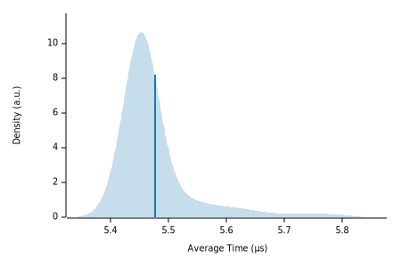

|  |
| Lower bound | Estimate | Upper bound | |
|---|---|---|---|
| Slope | 5.4756 µs | 5.4992 µs | 5.5254 µs |
| R² | 0.9634051 | 0.9658026 | 0.9628398 |
| Mean | 5.4643 µs | 5.4763 µs | 5.4901 µs |
| Std. Dev. | 43.755 ns | 66.490 ns | 85.368 ns |
| Median | 5.4521 µs | 5.4539 µs | 5.4566 µs |
| MAD | 8.3497 ns | 11.445 ns | 19.893 ns |
The plot on the left displays the average time per iteration for this benchmark. The shaded region shows the estimated probability of an iteration taking a certain amount of time, while the line shows the mean. Click on the plot for a larger view showing the outliers.
The plot on the right shows the linear regression calculated from the measurements. Each point represents a sample, though here it shows the total time for the sample rather than time per iteration. The line is the line of best fit for these measurements.
See the documentation for more details on the additional statistics.
| Lower bound | Estimate | Upper bound | ||
|---|---|---|---|---|
| Change in time | −8.0012% | −7.5478% | −7.0840% | (p = 0.00 < 0.05) |
The plot on the left shows the probability of the function taking a certain amount of time. The red curve represents the saved measurements from the last time this benchmark was run, while the blue curve shows the measurements from this run. The lines represent the mean time per iteration. Click on the plot for a larger view.
The plot on the right shows the two regressions. Again, the red line represents the previous measurement while the blue line shows the current measurement.
See the documentation for more details on the additional statistics.
{kind=link}
{kind=link}
{kind=link}
{kind=link}
{kind=link}
{kind=link}
{kind=link}
{kind=link}
{kind=link}
{kind=link}
{kind=link}
{kind=link}
{kind=link}